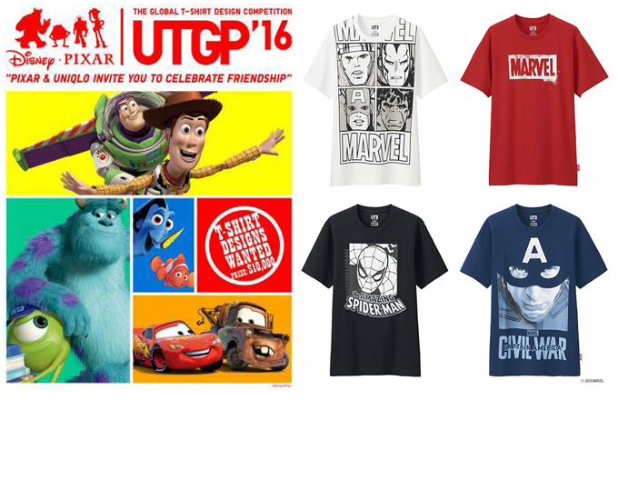
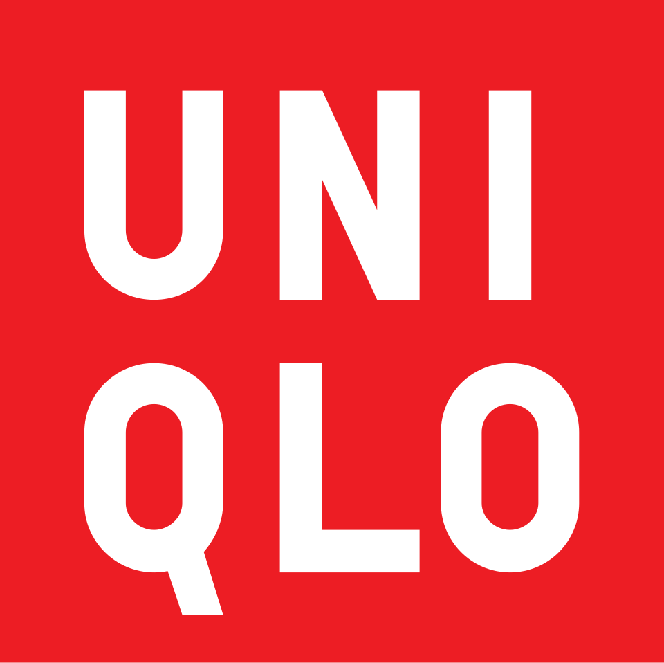

홈 > 브랜드 매거진 > 유니클로
유니클로
유니클로는 패션을 유행의 장식이 아니라 생활을 구성하는 공산품처럼 다룬다. 브랜드의 힘은 화려한 스타일보다 베이직, 품질, 가격, 운영 시스템을 일관되게 정렬하는 데서 나온다.
산업 분야 리테일·커머스 · 공개 등급 매거진 완성 · 브랜드 평가 5 ★


한눈에 보는 브랜드
유니클로는 패션을 유행의 장식이 아니라 생활을 구성하는 공산품처럼 다룬다. 브랜드의 힘은 화려한 스타일보다 베이직, 품질, 가격, 운영 시스템을 일관되게 정렬하는 데서 나온다.
브랜드 관점
유니클로는 패션을 유행의 장식이 아니라 생활을 구성하는 공산품처럼 다룬다. 브랜드의 힘은 화려한 스타일보다 베이직, 품질, 가격, 운영 시스템을 일관되게 정렬하는 데서 나온다.
시작과 성장
유니클로는 글로벌 패션 리테일 기업 패스트 리테일링(Fast Retailing Co., Ltd.)을 대표하는 브랜드이다. 유니클로의 전신은 1949년 야마구치에 있던 남성의류 판매 업체였다.
이후 1984년 일본 히로시마 지역에 유니클로 1호점을 열면서 본격적으로 사업을 시작했다.
브랜드 아이덴티티
유니클로는 누구나 언제 어디서든 입을 수 있는 고품질 의류를 합리적인 가격에 선보인다. 유니클로는 '라이프웨어(LifeWear)'라는 브랜드 철학 아래 국적, 계급, 직업, 학력, 나이, 성별 등을 초월하는 모두를 위한 옷을 만들기 위해 노력하고 있다.
제품과 서비스
유니클로는 기획부터 디자인, 생산, 유통, 판매까지 모든 시스템을 자사에서 운영하는 대표적인 SPA(Specialty Retailer of Private label Apparel) 브랜드이다. 기획에서 판매까지 1년 이상 소요되며 각 제조 과정마다 엄격한 품질 관리를 거친다.
현재 상태
타임라인
BI/CI 변천사
함께 읽을 브랜드
 리테일·커머스 · 자료 기반스토케
리테일·커머스 · 자료 기반스토케스토케는 노르웨이의 리테일·커머스 브랜드로, 상품 큐레이션, 가격 체계, 매장·온라인 유통, 구매 편의성이 브랜드 인식을 좌우하는 영역입니다.
양키캔들는 미국의 리테일·커머스 브랜드로, 상품 큐레이션, 가격 체계, 매장·온라인 유통, 구매 편의성이 브랜드 인식을 좌우하는 영역입니다.
 리테일·커머스 · 자료 기반이마트
리테일·커머스 · 자료 기반이마트이마트는 대한민국의 리테일·커머스 브랜드로, 상품 큐레이션, 가격 체계, 매장·온라인 유통, 구매 편의성이 브랜드 인식을 좌우하는 영역입니다.
 리테일·커머스 · 자료 기반디엠-드로게리 마크트
리테일·커머스 · 자료 기반디엠-드로게리 마크트디엠-드로게리 마크트는 독일의 리테일·커머스 브랜드로, 상품 큐레이션, 가격 체계, 매장·온라인 유통, 구매 편의성이 브랜드 인식을 좌우하는 영역입니다.
 리테일·커머스 · 자료 기반마이크로소프트 스토어
리테일·커머스 · 자료 기반마이크로소프트 스토어마이크로소프트 스토어는 미국의 리테일·커머스 브랜드로, 상품 큐레이션, 가격 체계, 매장·온라인 유통, 구매 편의성이 브랜드 인식을 좌우하는 영역입니다.
 리테일·커머스 · 자료 기반베드 베스 앤드 비욘드
리테일·커머스 · 자료 기반베드 베스 앤드 비욘드베드 베스 앤드 비욘드는 미국의 리테일·커머스 브랜드로, 상품 큐레이션, 가격 체계, 매장·온라인 유통, 구매 편의성이 브랜드 인식을 좌우하는 영역입니다.
 리테일·커머스 · 자료 기반인티미시미
리테일·커머스 · 자료 기반인티미시미인티미시미는 이탈리아의 리테일·커머스 브랜드로, 상품 큐레이션, 가격 체계, 매장·온라인 유통, 구매 편의성이 브랜드 인식을 좌우하는 영역입니다.
챔스
챔스스포츠
리테일·커머스 · 자료 기반챔스스포츠챔스스포츠는 리테일·커머스 브랜드로, 상품 큐레이션, 가격 체계, 매장·온라인 유통, 구매 편의성이 브랜드 인식을 좌우하는 영역입니다.